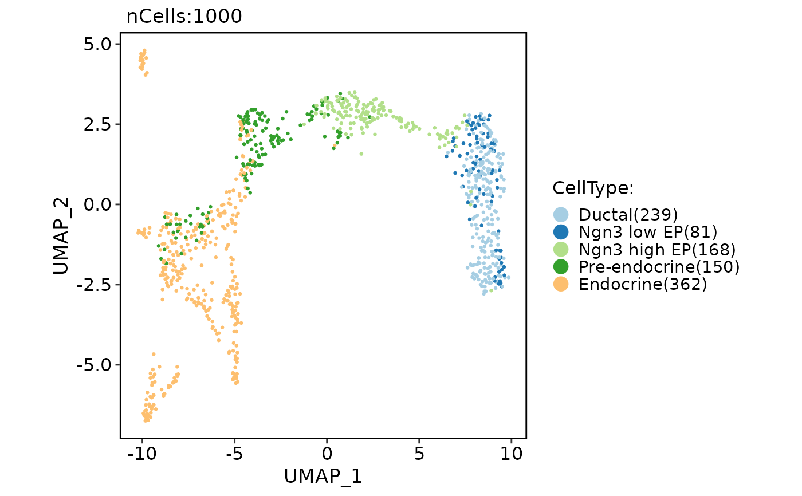

Run UMAP (Uniform Manifold Approximation and Projection)
Usage
RunUMAP2(object, ...)
# S3 method for Seurat
RunUMAP2(
object,
reduction = "pca",
dims = NULL,
features = NULL,
neighbor = NULL,
graph = NULL,
assay = NULL,
slot = "data",
umap.method = "uwot",
reduction.model = NULL,
return.model = FALSE,
n.neighbors = 30L,
n.components = 2L,
metric = "cosine",
n.epochs = 200L,
spread = 1,
min.dist = 0.3,
set.op.mix.ratio = 1,
local.connectivity = 1L,
negative.sample.rate = 5L,
a = NULL,
b = NULL,
learning.rate = 1,
repulsion.strength = 1,
reduction.name = "umap",
reduction.key = "UMAP_",
verbose = TRUE,
seed.use = 11L,
...
)
# S3 method for default
RunUMAP2(
object,
assay = NULL,
umap.method = "uwot",
reduction.model = NULL,
return.model = FALSE,
n.neighbors = 30L,
n.components = 2L,
metric = "cosine",
n.epochs = 200L,
spread = 1,
min.dist = 0.3,
set.op.mix.ratio = 1,
local.connectivity = 1L,
negative.sample.rate = 5L,
a = NULL,
b = NULL,
learning.rate = 1,
repulsion.strength = 1,
reduction.key = "UMAP_",
verbose = TRUE,
seed.use = 11L,
...
)Arguments
- object
An object. This can be a Seurat object, a matrix-like object, a Neighbor object, or a Graph object.
- ...
Unused argument.
- reduction
A character string specifying the reduction to be used. Default is "pca".
- dims
An integer vector specifying the dimensions to be used. Default is NULL.
- features
A character vector specifying the features to be used. Default is NULL.
- neighbor
A character string specifying the name of the Neighbor object to be used. Default is NULL.
- graph
A character string specifying the name of the Graph object to be used. Default is NULL.
- assay
A character string specifying the assay to be used. Default is NULL.
- slot
A character string specifying the slot name to be used. Default is "data".
- umap.method
A character string specifying the UMAP method to be used. Options are "naive" and uwot". Default is "uwot".
- reduction.model
A DimReduc object containing a pre-trained UMAP model. Default is NULL.
- return.model
A logical value indicating whether to return the UMAP model. Default is FALSE.
- n.neighbors
An integer specifying the number of nearest neighbors to be used. Default is 30.
- n.components
An integer specifying the number of UMAP components. Default is 2.
- metric
A character string specifying the metric or a function to be used for distance calculations. When using a string, available metrics are: euclidean, manhattan. Other available generalized metrics are: cosine, pearson, pearson2. Note the triangle inequality may not be satisfied by some generalized metrics, hence knn search may not be optimal. When using metric.function as a function, the signature must be function(matrix, origin, target) and should compute a distance between the origin column and the target columns. Default is "cosine".
- n.epochs
An integer specifying the number of iterations performed during layout optimization for UMAP. Default is 200.
- spread
A numeric value specifying the spread parameter for UMAP, used during automatic estimation of a/b parameters. Default is 1.
- min.dist
A numeric value specifying the minimum distance between UMAP embeddings, determines how close points appear in the final layout. Default is 0.3.
- set.op.mix.ratio
Interpolate between (fuzzy) union and intersection as the set operation used to combine local fuzzy simplicial sets to obtain a global fuzzy simplicial sets. Both fuzzy set operations use the product t-norm. The value of this parameter should be between 0.0 and 1.0; a value of 1.0 will use a pure fuzzy union, while 0.0 will use a pure fuzzy intersection.
- local.connectivity
An integer specifying the local connectivity, used during construction of fuzzy simplicial set. Default is 1.
- negative.sample.rate
An integer specifying the negative sample rate for UMAP optimization. Determines how many non-neighbor points are used per point and per iteration during layout optimization. Default is 5.
- a
A numeric value specifying the parameter a for UMAP optimization. Contributes to gradient calculations during layout optimization. When left at NA, a suitable value will be estimated automatically. Default is NULL.
- b
A numeric value specifying the parameter b for UMAP optimization. Contributes to gradient calculations during layout optimization. When left at NA, a suitable value will be estimated automatically. Default is NULL.
- learning.rate
A numeric value specifying the initial value of "learning rate" of layout optimization. Default is 1.
- repulsion.strength
A numeric value determines, together with alpha, the learning rate of layout optimization. Default is 1.
- reduction.name
A character string specifying the name of the reduction to be stored in the Seurat object. Default is "umap".
- reduction.key
A character string specifying the prefix for the column names of the UMAP embeddings. Default is "UMAP_".
- verbose
A logical value indicating whether to print verbose output. Default is TRUE.
- seed.use
An integer specifying the random seed to be used. Default is 11.
Examples
pancreas_sub <- Seurat::FindVariableFeatures(pancreas_sub)
pancreas_sub <- RunUMAP2(object = pancreas_sub, features = Seurat::VariableFeatures(pancreas_sub))
#> 18:24:58 UMAP embedding parameters a = 0.9922 b = 1.112
#> Found more than one class "dist" in cache; using the first, from namespace 'BiocGenerics'
#> Also defined by ‘spam’
#> 18:24:58 Read 1000 rows and found 2000 numeric columns
#> 18:24:58 Using Annoy for neighbor search, n_neighbors = 30
#> Found more than one class "dist" in cache; using the first, from namespace 'BiocGenerics'
#> Also defined by ‘spam’
#> 18:24:58 Building Annoy index with metric = cosine, n_trees = 50
#> 0% 10 20 30 40 50 60 70 80 90 100%
#> [----|----|----|----|----|----|----|----|----|----|
#> *
#> *
#> *
#> *
#> *
#> *
#> *
#> *
#> *
#> *
#> *
#> *
#> *
#> *
#> *
#> *
#> *
#> *
#> *
#> *
#> *
#> *
#> *
#> *
#> *
#> *
#> *
#> *
#> *
#> *
#> *
#> *
#> *
#> *
#> *
#> *
#> *
#> *
#> *
#> *
#> *
#> *
#> *
#> *
#> *
#> *
#> *
#> *
#> *
#> *
#> |
#> 18:24:58 Writing NN index file to temp file /tmp/Rtmps8AXJ4/file8bfc3679594f
#> 18:24:58 Searching Annoy index using 1 thread, search_k = 3000
#> 18:25:00 Annoy recall = 100%
#> 18:25:02 Commencing smooth kNN distance calibration using 1 thread
#> with target n_neighbors = 30
#> 18:25:05 Initializing from normalized Laplacian + noise (using RSpectra)
#> 18:25:05 Commencing optimization for 200 epochs, with 40796 positive edges
#> 18:25:07 Optimization finished
CellDimPlot(pancreas_sub, group.by = "CellType", reduction = "umap")
